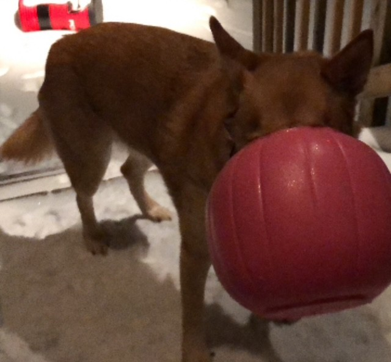

If you are interested in my current pets, I will ask you to refer back to the home page which you can access with the link below:
Click Here To Return To The Home Page
I have had a few other dogs in the past that I no longer have. These in particular are Amber amd Misha. Both were rescue dogs that we picked up at certain points. Amber tragically passed in early 2022 whilst Misha is a foster we had for a time before she was found a home. Though they are no longer with us for different reasons, I loved and valued them dearly!
Quick Info:
Quick Info:
I think pets really add something to your life. It has been scientifically posited with much evidence that having pets contributes to an individual's emotional well-being. It is for that reason in part that saying goodbye to a pet can be so difficult, yet it has always been worth it in my eyes. To know that the time you had with a pet made both them and your life a little better is proof that everything is worth it in the end.